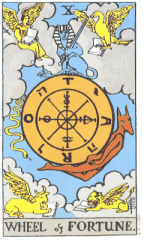
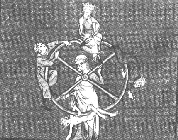

<html><head>
<title>The Annotated Wheel</title>
</head>
<body>
<i>"If the thunder don't get you, then the lightning will"</i>

<h2>The <i>Annotated</i> "The Wheel"</h2>
An installment in <a href="gdhome.html"> The <i>Annotated</i> Grateful Dead Lyrics.</a><br>
By <a href="david.html">David Dodd</a><br>
Research Associate, Music Dept., Univ. of Calif. at Santa Cruz
<hr>
<a href="copyrigh.html">Copyright notice</a>
<hr>
<a href="#title"><h3>"The Wheel"</h3></a>
Words by Robert Hunter; music by Jerry Garcia and Bill Kreutzmann<br>
Copyright Ice Nine Publishing; used by permission.
<p>
<blockquote>
<a href="#wheel">The wheel</a> is turning <br>


and you can't slow down<br>


You can't let go <br>


and you can't hold on<br>


You can't go back <br>


and you can't stand still<br>


<a href="#thunder">If the thunder don't get you</a> <br>


then the <a href="http://www.nssl.uoknor.edu/personal/Doswell/ltgph.html" target="new">lightning</a> will<br>


<br>


Won't you try just a little bit harder?<br>


Couldn't you try just a little bit more?<br>


Won't you try just a little bit harder?<br>


Couldn't you try just a little bit more?<br>


<br>


<a href="#robin">Round round</a> <a href="http://www.netaxs.com/~mhmyers/cdjpgs/robin2.jpg" target="new">robin</a> run around<br>


Gotta get back where you belong<br>


Little bit harder, just a little bit more<br>


Little bit farther than you than you've gone before<br>


<br>


The wheel is turning <br>


and you can't slow down<br>


You can't let go <br>


and you can't hold on<br>


You can't go back <br>


and you can't stand still<br>


If the thunder don't get you <br>


then the lightning will<br>


<br>


<a href="#small">Small wheel turn by the fire and rod<br>


Big wheel turn by the grace of God</a> <br>


Everytime that wheel turn round<br>


bound to cover just a little more ground<br>


<br>


The wheel is turning <br>


and you can't slow down<br>


You can't let go <br>


and you can't hold on<br>


You can't go back <br>


and you can't stand still<br>


If the thunder don't get you <br>


then the lightning will<br>


<br>


Won't you try just a little bit harder<br>


Couldn't you try just a little bit more?<br>


Won't you try just a little bit harder?<br>


Couldn't you try just a little bit more?<br>


</blockquote>


<hr>


<a name="title"><h3>"The Wheel"</h3></a>

Musical details:

<ul>

<li>Key: C (with dominant sevenths prominent)

<li>Time signature: 4/4

<li>Chords used: C, G, F, B-flat

<li>Songbook availability:

<ul>

<li><a href="songbook.html#Garcia"><cite>Garcia</cite></a>

<li><a href="songbook.html#anthologyII"><cite>Anthology II</cite></a>

</ul>

</ul>


Recorded on 


<ul>


<li><cite><a href="jgdisc.html#garcia1">Garcia</a></cite>


<li><cite><a href="discog1.html#dozin">Dozin' at the Knick</a></cite>


</ul>


<p>


Covered by


<ul>


<li>Toni Brown on <cite>Blue Morning</cite> (1996)


</ul>


<p>


First performance June 3, 1976, at the Paramount Theater in Portland, Oregon. It


occupied the encore position. Other firsts at the concert were


<a href="lazy.html">"Lazy Lightning"/"Supplication,"</a> <a href="aswe.html">"Might As Well,"</a> and "Samson and Delilah."

"The Wheel" usually appeared out of "Space" or "Drums."  It


occupied a steady spot in the repertoire since its first


introduction.


<hr>


<a name="wheel"><h3>The Wheel</h3></a>


Compare Hunter's "Lay of the Ring" from the <b>Eagle Mall Suite.</b>:


<blockquote>


"Age by age the ancient wheel<br>


creaks and turns around"


</blockquote>


<p>


A potent symbol throughout human history.


<ul>


<li>In <b>Buddhism</b>, known as the <i>bhava-cakra</i>, from the


Sanskrit "wheel [<i>cakra</i>] of becoming [<i>bhava</i>].


<blockquote>


"Also called WHEEL OF LIFE ... a representation of the endless


cycle of rebirths governed by the law of dependent


origination..., shown as a wheel clutched by a monster,


symbolizing impermanence.<br>


<p>


"In the center of the wheel are shown the three basic evils,


symbolized by a red dove (passion), a green snake (anger), and a


black pig (ignorance). The intermediate space between the center


and the rim is divided by spokes into five (later, six) sections,


depicting the possible states into which a man can be reborn: the


realm of gods, titans (if six states are shown), men, animals,


ghosts, and demons. Around the rim of the wheel the 12


<i>nidanas,</i> or interrelated phases in the cycle of existence,


are shown in an allegorical or symbolical manner--ignorance,


<i>karman</i> formations, rebirth consciousness, mind and body,


sense organs, contact, sensation, craving, grasping, becoming,


birth, and old age and death." --<cite>Encyclopedia Britannica


15th ed.</cite>


</blockquote>





<li>In <a href="http://www.iii.net/users/dtking/tarot.html" target="new">Tarot</a>, known as The Wheel of Fortune. Card number


10. 


"The wheel of fortune revolves on its axis [shades of <a


href="darkstar.html">"Dark Star"</a>!] of two straight branches


springing from the edge of a cliff of barren rock and dirt. Near


the wheel of fortune grows a bed of red <a


href="rose.html">roses</a> signifying hope. The blindfolded woman


of fortune with an expression of blissful unawareness turns the


wheel depicting the uncertainty of change. She is the dispenser


of sorrow and joy. At the top of the wheel sits a man with his


legs crossed in the form of an X while his right hand grasps the


hand of a woman. The man holds a hat in his left hand, rejoicing


in his deliverance and success. On the descending side of the


wheel a man falls off the edge of the cliff. Love and death are


thus equally dispensed. The wheel of fortune has eight spokes


signifying that each state of life is across the wheel from its


opposite. The wheel of fortune is the perpetual motion of a


continuously changing universe and the flowing of human life." --


<a href="biblio.html#kaplan">Kaplan.</a> <cite> Tarot Cards For


Fun and Fortune Telling.</cite> p. 34


<p>


and


<p>


<blockquote>


"The card thus represents the Universe in its aspect as a


continual change of state. Above, the firmament of stars. These


appear distorted in shape, although they are balanced, some being


brilliant and some dark. From them, through the firmament, issue


lightnings; they church it into a mass of blue and violet plumes.


In the midst of all this is suspended a wheel of ten spokes,


according to the number of the Sephiroth, and of the sphere of


Malkuth, indicating governance of physical affairs.


<p>


"On this wheel are three figures, the Sworded Sphinx, Hermanubis,


and Typhon; they symbolize the three forms of energy which govern


the movement of phenomena.


<p>


"...One of the most important aphorisms of Hindu philosophy is:


"The Gunas revolve". This means that, according to the doctrine


of continual change, nothing can remain in any phase where one of


these Gunas is predominant; however dense and dull that thing may


be, a time will come when it begins to stir. 


<p>


"...On the right hand side, precipitating himself downward, is


Typhon, who represents the element of salt. Yet in these figures


there is also a certain degree of complexity, for Typhon was a


monster of the primitive world, personifying the destructive


power and fury of volcanos and typhoons. In the legend, he


attempted to obtain supreme authority over both gods and men; but


Zeus blasted him <b><i>with a thunderbolt. </i></b> [!--italics


mine] ... But this card...may also be interpreted as a Unity of


supreme attainment and delight. The lightnings which destroy,


also beget; and the wheel may be regarded as the Eye of Shiva,


whose opening annihilates the Universe, or as a wheel upon the


Car of Jaganath, whose devotees attain perfection at the moment


that it crushes them."--<a


href="biblio.html#crowley">Crowley,</a> <cite>The Book of


Thoth.</cite> pp. 90 and 91.<br>


</blockquote>


<a href="http://www.yahoo.com/Entertainment/Paranormal_Phenomena/Magick/Thelema/Crowley__Aleister__1875_1947_/" target="new">Aleister Crowley's</a> book also has an interesting epigram page:


<blockquote>


"WHEEL AND--WHOA!<br>


The Great Wheel of Samsara.<br>


The Wheel of the Law. (Dhamma.)<br>


The Wheel of the Taro.<br>


The Wheel of the Heavens.<br>


The Wheel of Life.<br>


All these Wheels be one; yet of all these the Wheel of the TARO


alone avails thee consciously.<br>


Meditate long and broad and deep, O man, upon this Wheel,


revolving it in thy mind!<br>


Be this thy task, to see how each card springs necessarily from


each other card, even in due order from The Fool unto The Ten of


Coins.<br>


Then, when thou know'st the Wheel of Destiny complete, may'st


thou perceive THAT Will which moved it first. [There is no first


or last.]<br>


And lo! thou art past through the Abyss.<br>


--<a href="http://www.speakeasy.org/~netropic/crowley/index.cgi?t=3" target="new">The Book of Lies</a>."


</blockquote>


and


<blockquote>


"Wheel of Fortune is the universal principles of abundance,


prosperity and expansion. In astrological terms this is Jupiter,


the planet of luck, opportunity, and abundance. This symbol


reminds us that like the goddess Fortuna in Roman mythology that


we can turn our lives in more fortunate and positive directions


by being objective like the Sphinx, flexible like the monkey, and


reaching for new opportunities and ways to express our creative


power like the crocodile. The stars exploding into lightning


bolts represent the experience of awakening to the possibilities


that can turn our lives in more positive and expansive


directions. Often these experiences are referred to as the


<i>aha!</i> or peak experience..."--<a


href="biblio.html#arrien">Arrien,</a> <cite>The Tarot


Handbook</cite>, p. 63.


</blockquote>


It seems worth noting that the Tarot was used by 

<a href="http://www.cacs.usl.edu/Departments/English/authors/eliot/index.html" target="new">T.S. Eliot</a>


(whose "Love Song of J. Alfred Prufrock" may have provided Hunter


with lines for both <a href="darkstar.html#eliot">"Dark Star"</a>


and <a href="stella.html">"Stella Blue"</a>) in his 

<a href="http://www.yahoo.com/Arts/Humanities/Literature/Genres/Poetry/Poets/Eliot__T_S___1888_1965_/Waste_Land__The/" target="new"> "The Waste Land"</a>:


<blockquote>


"Madame Sosostris, famous clairvoyante,<br>


Had a bad cold, neverthless<br>


Is known to be the wisest woman in Europe,<br>


With a wicked pack of cards. Here said she,<br>


Is your card, the drowned Phoenician Sailor,<br>


(Those are pearls that were his eyes. Look!)<br>


Here is Belladonna, the Lady of the Rocks, <br>


The lady of situations.<br>


Here is the man with three staves, and here the <b>Wheel</b>..."


--ll. 43-51.


</blockquote>


<li>In <b>Roman mythology</b>, 





<blockquote>


"<b>Fortuna</b>...the goddess of fortune or chance. She was


identified with the Greek Tyche, and she was often depicted with


a rudder, as the pilot of destiny, with wings, or with a wheel.


The wheel of fortune was a widely used symbol in medieval art and


literature, forming the concept of which Lydgate's <cite>Falls of


Princes</it> (1494) and Chaucer's <i>Monk's Tale</i> from the


<cite>Canterbury Tales</cite> were based."--<a


href="biblio.html#benet">Benet,</a> p. 359.


</blockquote>


<li>In the <b)<cite>Bible</b></cite>, the wheel appears several


times, most notably in the book of Ezekiel. 


<blockquote>


"Now as I beheld the living creatures, behold one wheel upon the


earth by the living creatures, with his four faces. The


appearance of the wheels and their work was like unto the colour


of a beryl: and they four had one likeness: and their appearance


and their work was as it were a wheel in the middle of a wheel."


--Chapter 1, vv. 15 and 16.


</blockquote>


This reference was used in the spiritual, "'Zekiel Saw De Wheel,"


which is referred to and quoted in <a


href="estimate.html">"Estimated Prophet."</a> Hunter quotes from


the spiritual later in the song, in the <a href="#small">Small


wheel...Big wheel</a> line.
<p>
This note from a reader:
<blockquote>
From: Matthew Carl [mailto:macarl@jtsa.edu]<p>
Sent: Tuesday, November 26, 2002 11:10 PM<p>
Subject: "the wheel"
<p>

hi david.
<p>
I've been a big fan of your annotated lyrics site for years (back when it was at UCCS.)  I never looked at "the wheel" until now.  I wonder why no one (except the spiritual) ever wrote on the connection to the "merkavah vision" from the book of Ezekiel (Ez 1...)  
<p>
A standard of jewish mysticism, the merkavah or chariot vision is a striking visual of God and has imagery reminiscent of "the wheel" (rather, vice-versa.)  Ezekiel sees God represented by four somewhat "human-like creatures, each with four faces, four wings, a single rigid leg and feet like a single calf's hoof...  they had human hands below their wings...  they did not turn when they moved; each could move in the direction of any of its faces.  each had a human face [in front]... the face of a lion on the right... the face of an ox on the left and... the face of an eagle [in back.]"  (Ez 1:5 - 10.)
<p>
"As I gazed on the creatures, I saw one wheel on the ground next to each of the four-faced creatures.  As for the appearance and structure of the wheels, they gleamed like beryl.  All four had the same form; the appearance and structure of each was as of two wheels cutting through each other.  And when they moved, each could move in the direction of any of its four quarters; they did not veer when they moved...  
<p>
Wherever the spirit impelled them to go, they went--wherever the spirit impelled them--and the wheels were borne alongside them; for the spirit of the creatures was in the wheels"  (Ez 1:15 - 21.)
<p>
There's some great and not-so-great literature on the merkavah (alt. merkabah, et al.) vision and other relevant kabbalistic texts.  These are becoming easier to find and harder to sort through.  Also, the hebrew word ofanim means "wheels" and also refers to a class of angelic beings.  I hope this helps someone somewhere.
<p>
Thanks,<br>
Matthew Carl<br>
[rabbinical student, jtsa]  please write me if you'd like more information or citations on this subject.
</blockquote>

</ul>


<hr>


<a name="thunder"><h3>If the thunder don't get you, then the


lighting will</h3></a>


Nearly a quote from Merle Travis' song, <a href="http://pubweb.parc.xerox.com/digitrad/song=TON16/">"Sixteen Tons."</a>


"If the left one don't get you, then the right one will,"


speaking of his two fists, one of steel and one of


iron.


<hr>

<h3><a name="robin">Round round robin...</a></h3>

This note from a reader:

<blockquote>

Subject: Round Robin<br>

Date: Wed, 12 Mar 1997 13:15:12 -0500<br>

From: "Thomas E. Malloy" <malloy@neca.com>

<p>

Dear David,

<p>

I enjoy your excellent Dead pages.  Your work has become a resource for

me as I learn new Dead songs and think more deeply about them.  

<p>

I was reading your analysis of The Wheel and wanted to pass along an

idea.  The phrase "round round robin ..." may not be a reference to the

bird.  Rather, there is a reserach design used in biology and psychology

called the round robin.  Imagine four people A, B, C, and D that all

interact with one another.  Measurements of each person's behavior in

response to another is measured (e.g., smiling).  The data structure

looks like this:

<pre>

                    A  B  C  D

               A    -  x  x  x

               B    x  -  x  x

               C    x  x  -  x

               D    x  x  x  -  

</pre>

where x's are one person's response to another and -'s are diagonal

elements.  This is a very unusual design in science and indeed has a

wheel like quality.  I don't know if Robert Hunter had this in mind when

composing the lyrics, but the logic of this design is highly consistent

with the theme of this song.  Also, this is a sturcture used in athletic

events (round robin tennis tournament).

<p>

Again, thank you for such high quality scholarship.

<p>

Sincerely.<br>

Tom Malloy<br>

Professor of Psychology<br>

Rhode Island College<br>

</blockquote>

<hr>




<a name="small"><h3>Small wheel ... Big wheel</h3></a>


Echoing a line from the African American spiritual, "'Zekiel Saw


De Wheel":


<blockquote>


"De big wheel run by faith,<br>


Little wheel run by de grace of God..."


---<a href="biblio.html#johnson">Johnson: </a> <cite>The Books of


American Negro Spirituals.</cite> ii, 145.


</blockquote>


<hr>


keywords: @bird, @thunder, @lightning<br>


DeadBase code: [WHEE]


<hr>


First posted: March, 1995.<br>
Revised: November 27, 2002

</body>


</html>


